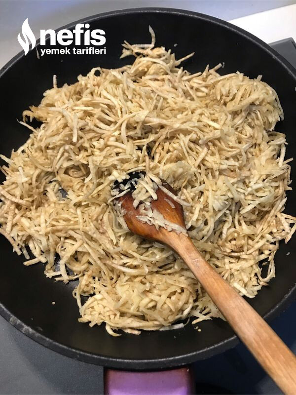

🍽️ 6-8 kişilik⏱️ Hazırlık: 15 dk🔥 Pişirme: 10 dk🏷️ Salata & Meze & Kanepe🏷️ Meze Tarifleri
Malzemeler
- 1 büyük kereviz
- 2 yeşil elma
- 1 küçük fincan zeytinyağı
- 600-700 gram yoğurt
- 1-2 diş sarımsak
- Tuz
- 1 çay bardağı kadar iri kıyılmış ceviz içi
- 1 dolu kaşık tereyağı
Hazırlanışı
- Kerevizi yıkayıp, soyup rendeliyoruz.
- Zeytinyağında 10 dakika kadar kavurup soğumaya bırakıyoruz.
- Soğuyunca iki adet yeşil elmayı rendeleyip kerevizle iyice harmanlıyoruz.
- 1-2 diş sarımsağı tuz ile ezip yoğurt ile karıştırarak kereviz ve elma karışımına ekliyoruz.İyice karıştırıyoruz.
- İkram etmeden önce;Tereyağında cevizleri kavuruyoruz.
- Kereviz mezemizin üzerini cevizle tatlandırıp servise hazır ediyoruz.